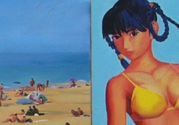
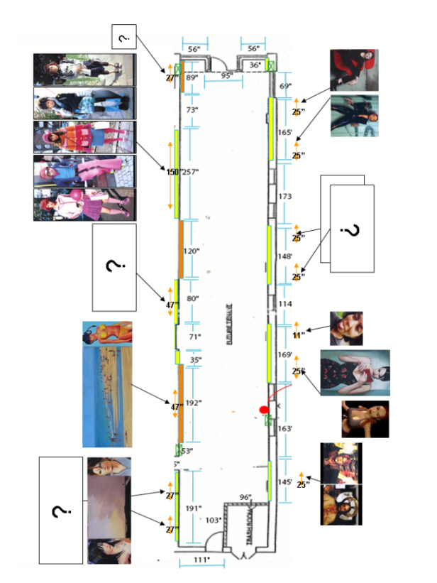

| Jose Quesada Note: this is an exhibition project. There are completed paintings, unfinished paintings, and preparatory photos with descriptions of the final work. This proposal is also presented as a web site, of which you are holding a paper version now. The preparatory photos are marked as (in preparation*). There isn't really that much difference between the final painting (oil on canvas) and the photo, so I have presented the photos to give a better idea of what the exhibition is all about. I think the topic treated in this proposal can be particularly appropriate for the Future Tenant art gallery and its expected audience in the technological and cultural environment of Pittsburgh.  beach(2000). detail I paint video-game characters. They are carefully designed to be cool, sexy, appealing in any way imaginable. Since they are part of a virtual reality, their whole environment can be created and recreated at whim. If they are 'transplanted' to the frozen, time-less world of the 'oil on canvas', something magic happens: they are no longer that different form the flesh-and-bone people that inhabit reality characters, movie characters,etc have a very short life span: they are ephemera. However, people associate traditional forms of art (e.g., oil on canvas) with transcendence, historical value, immortality. In my work, I play with the juxtaposition of these stereotypes. Reality, and lies that we buy into See the following definitions from dictionary.com : cool Art has become more sophisticated with evolution, and as such, more dependent on the context. Recent pieces of art have no meaning unless they are understood in their cultural context, e.g., John Cage's allegoric compositions. Current exhibitions in main modern art museums are not understood by people with no background in history of art (context). Installations, videos, conceptual art... are strange to people, who enjoy more their newspaper comic strips. Since other modern, non-artistic cultural phenomena of our time are very context-dependent too, art is losing its privileged status and becoming mainstream in those popular elements: movies, comics, and lately, videogames. The amount of effort invested in research on human behavior and design in videogames is surprising. The final objective of these efforts is to fabricate cool: a temporal, perishable good that is easily understood and appreciated by the general public that doesn't understand what's inside the museums. This is an after-pop and after-Kitsch criterion for art value. Current art merit criteria have less to do with beauty and more to do with cool . I'm interested in the contrast of "coolness" and "beauty". Most people, if asked, would agree in that art should be beautiful. Kitsch art has the most powerful reflection on "beauty", showing that extremely ugly things can "turn around the score" and become beautiful. Contemporary trends in TV (Reality shows, variety shows with "freaks") show that people may tire of prefabricated, highly-selected objects of desire (e.g., top models), and may enjoy their selves more when the display shows mundane, somewhat ugly, but closer, "normal person". That is, bad taste could easily become mainstream, and in some countries (for example, Spain) is. On a related topic, I'm interested in the process of selection that happens when the artist presents some object to the public. Richter postulated that we could eliminate the selection process in painting. He showed that he apparently didn't care about what topic he was painting. In my opinion, Richter's work is not a discourse about the idea of selection, but a reflection on representation, and why it is still worthwhile to paint in the 21st century. In my work, I use photography too. It can be my own, or any other published picture, from fancy fashion photography to amateur out-of-focus, red-eyed shots of best friends in parties. They can also be screen captures of videogames or other virtual reality situations that are heavily designed for a sophisticated public that consumes them in huge amounts. I'm interested in the borders of the concept of reality, or 'realistic representation', and how people buy consciously this lie. For example, today we all look at photographs, movies, vector graphics, etc. and get caught in the fiction without asking; this was absolutely impossible in the 18th century, where painting was the only mean to represent reality visually. One basic motif how art can make the most real-life of situations unreal: for example by grabbing real people and make them look as sketches of fiction anime characters, in the 'japanese teens' series of drawings. These people are real, but they have internalized so many stereotypes from the fictitious world of Manga and design in their attempt to be 'cool', that they look unreal. Most of the work I present here are representations of representations. I like to play with the concept of representation (as presented in Palmer, 1978), and I use painting and drawing because they come with a huge collection of preconceived ideas that can be exploited in the spectator to produce the effect that I want.  References Palmer, S. E. (1978). Fundamental aspects of cognitive representation. In E. Rosh & B. B. Lloyd (Eds.), Cognition and categorization (pp. 259-303). Hillsdale, NJ: Erlbaum. Favorite artists: Gerald Richter, Andreas Gursky, Don Hertzfeldt, William Wegman Favorite Galleries: saatchi |
| ©2004 Jose Quesada • This document is available online at http://lsa.colorado.edu/~quesadaj/FTexhibitionProject/ |